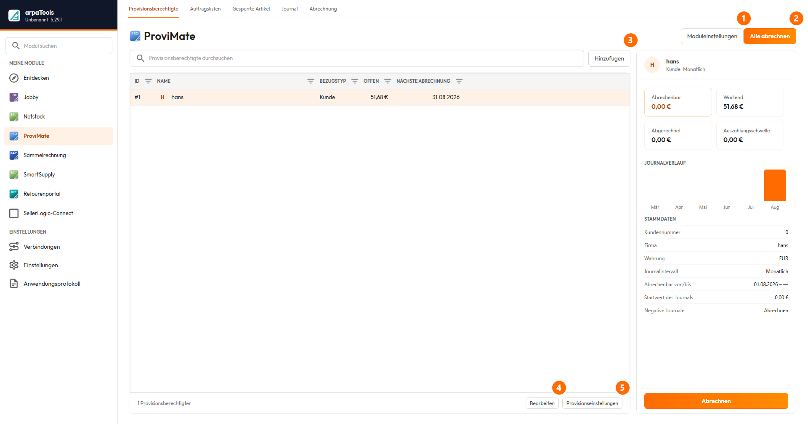

ProviMate
ProviMate
Auf dieser Seite
- Programmablauf
- Programmeinstellungen
- Provisionsberechtigte
- Allgemeine Übersicht
- Provisionsberechtigten anlegen
- Provisionsberechtigten bearbeiten
- Allgemeine Sidebar
- Provisionseinstellungen
- Journalintervall
- Provisionsregeln
- Prozentuale Provision oder fester Wert
- Staffelprovisionen
- Provisionsregeln: Beispiele (Regeltrichter)
- Auftragsliste
- Auftragsliste anlegen
- Anwendungsbeispiel: Shopify-Coupon
- Journal
- Journalübersicht
- Journalpositionen
- Spezielle Journalpositionen
- Journal abrechnen
- Umgang mit Währungen
- Rechnungskorrekturen
- Grenzen
- Abrechnungen
- Abrechnungen löschen
- JTL2Datev und ProviMate-Gutschriften
Programmablauf
Dieser Abschnitt gibt einen Überblick über die Kernfunktionen von arpaTools ProviMate. Details stehen in den nachfolgenden Kapiteln.
Provisionsberechtigte: Definieren Sie zunächst Provisionsberechtigte. Das können JTL-Wawi-Kunden oder JTL-Wawi-Benutzer sein. Einen Influencer, der für Ihre Produkte wirbt, legen Sie in JTL-Wawi als Kunden an. Sollen Mitarbeiter Provisionen erhalten, legen Sie diese als Benutzer an.
Provisionsregeln: Legen Sie pro Provisionsberechtigtem fest, wofür Provisionen gezahlt werden. Eine allgemeine Regel zahlt auf alle Umsätze; feiner gegliederte Regeln greifen z. B. für eine Kundengruppe, eine Auftragsliste, einen Coupon-Code oder bestimmte Kunden.
Provisionsjournal: Provisionen werden je Provisionsberechtigtem und Regel nach dem eingestellten Abrechnungsintervall in Journalen zusammengefasst. Bei wöchentlicher Abrechnung entsteht pro Zeitraum ein Journal mit allen betreffenden Rechnungspositionen.
Abrechnung: Nicht abgerechnete Journale werden in Abrechnungen zusammengefasst. Je Abrechnung lassen sich Gutschriften ohne Rechnungsbezug in JTL-Wawi erzeugen oder ein Abrechnungsbericht für die Lohnbuchhaltung erstellen. Erstellte Provisionsgutschriften können über JTL2Datev an die Buchhaltung übergeben werden.
Programmeinstellungen
![Dialog ProviMate-Moduleinstellungen. Im Bereich Allgemein die Auswahl von Firma, Benutzer, Steuerklasse und Referenzdatum, dazu Referenzdatum älter als Tage, Alte Journale aktualisieren in Wochen, Abrechnungsart und Exportverzeichnis. Im Bereich Journal das Journalintervall sowie initialer Journalwert, pauschaler Abzugsbetrag und minimaler und maximaler Journalwert. Im Bereich Abrechnung die Auszahlungsschwelle, der Umgang mit negativen Journalen und nach wie vielen Tagen abgerechnete Aufträge ausgeblendet werden.](../docs/bilder/provimate-programmeinstellungen.png)
- Firma: unter welchem Firmennamen Provisionsgutschriften in JTL-Wawi angelegt werden.
- Benutzer: mit welchem Benutzer Provisionsgutschriften erstellt werden.
- Steuerklasse: Standardsteuersatz für erstellte Gutschriften. Provisionen werden als Dienstleistung besteuert, daher der übliche Steuersatz des Landes. Für Nutzer von go-OSS ist er als „OSS undefiniert Standard" festgelegt.
- Referenzdatum: welches Datum als Bezugspunkt für „Referenzdatum älter als (Tage)" dient, z. B. „Bezahldatum der Rechnung".
- Referenzdatum älter als (Tage): ab welchem Abstand zum Referenzdatum eine Provision freigegeben und berechnet wird (z. B. 30 Tage, damit die Rückgabefrist abgelaufen ist). Wichtig bei gestaffelten Provisionssätzen. Mit dieser Einstellung fließen nur Rechnungen ein, die den definierten Zeitraum bereits erreicht haben; eine Erstattung innerhalb dieser Frist wirkt sich also gar nicht erst auf die Provision aus. Rechnungskorrekturen nach Ablauf der Frist kürzen die Provision nur, wenn die folgende Einstellung eingeschaltet ist.
- Provision durch Rechnungskorrekturen kürzen: ob eine Rechnungskorrektur in JTL-Wawi die zugehörige Provision anteilig kürzt. Standardmäßig aus, ein Update ändert Ihre Berechnung also nicht. Eingeschaltet entsteht je erstatteter Rechnungsposition eine zusätzliche Journalposition „Rechnungskorrektur" mit negativem Wert. Gehört die Ursprungsposition zu einem noch offenen Journal, steht der Abzug dort; ist dieses Journal bereits abgerechnet, geht der Abzug in das offene Journal, in dessen Zeitraum das Datum der Rechnungskorrektur fällt. In ein bereits abgerechnetes Journal wird nie geschrieben. Details und Grenzen im Kapitel „Rechnungskorrekturen".
- Rechnungskorrekturen berücksichtigen ab: Stichtag für die vorige Einstellung. Nur Rechnungskorrekturen ab diesem Datum kürzen die Provision. Schalten Sie die Kürzung ein, fragt arpaTools beim Speichern nach und setzt den Stichtag auf das aktuelle Datum, damit ältere Korrekturen nicht rückwirkend abgezogen werden. Ein früheres Datum tragen Sie danach nach, in einem zweiten Speichervorgang. Ohne Datum ist die Kürzung nicht aktiv, auch wenn der Haken gesetzt ist.
- Alte Journale aktualisieren (in Wochen): wie weit zurückliegende Rechnungsdaten automatisch zur Aktualisierung von Journalen berücksichtigt werden. Ein größerer Zeitraum verlängert die Ladezeit. So werden nachträgliche Zahlungen im aktuell offenen Journal berücksichtigt. Nicht abgerechnete Journale lassen sich zudem jederzeit manuell neu berechnen.
- Abrechnungsart: Detailgrad der Abrechnung in JTL-Wawi:
- Positionen auflisten: alle Abrechnungspositionen werden detailliert in der Gutschrift aufgeführt.
- Aufträge auflisten: nur die Aufträge werden dokumentiert, ohne Aufschlüsselung der Einzelpositionen.
- Einzelaufstellung als CSV-Datei: Export der Transaktionsdaten als CSV zur Weiterverarbeitung.
- Journalintervall: globales Intervall, je Provisionsberechtigtem überschreibbar. Möglich: täglich, wöchentlich, zweiwöchentlich, monatlich, quartalsweise, halbjährlich, jährlich.
- Initialer Journalwert: Betrag, der bei Erstellung eines Journals automatisch verbucht wird.
- Pauschaler Abzugsbetrag: fester Betrag, der vom Gesamtbetrag jedes Journals abgezogen wird, z. B. für bereits ausgezahlte Gehälter (siehe Option „Negative Journale").
- Minimaler Journalwert: Mindestbetrag je Journal, auch wenn die Summe der Provisionen darunterliegt.
- Maximaler Journalwert: Höchstbetrag je Journal.
- Auszahlungsschwelle: ab diesem Betrag können Abrechnungen erstellt werden.
- Negative Journale: ob negative Journalsummen (durch den pauschalen Abzugsbetrag) abgerechnet oder ignoriert werden. „Abrechnen" summiert alle Journale (auch negative), „Ignorieren" lässt negative Journale außen vor.
Provisionsberechtigte
Allgemeine Übersicht
- Hinzufügen: neuen Provisionsberechtigten anlegen (Kunde oder Benutzer der JTL-Wawi).
- Bearbeiten: vorhandenen Eintrag ändern.
- Provisionseinstellungen: individuelle Provisionssätze festlegen (siehe unten).
- Moduleinstellungen: öffnet die globalen ProviMate-Einstellungen (siehe „Programmeinstellungen").
- Alle abrechnen: rechnet für alle Provisionsberechtigten ab.
möglicherweise in einem Kontextmenü der Zeile; nicht geprüft.

① Moduleinstellungen — öffnet die globalen Einstellungen. ② Alle abrechnen — rechnet alle Provisionsberechtigten ab. ③ Hinzufügen — legt einen neuen Provisionsberechtigten an. ④ Bearbeiten — ändert den ausgewählten Eintrag. ⑤ Provisionseinstellungen — individuelle Provisionssätze.
Provisionsberechtigten anlegen
Ein Provisionsberechtigter ist ein Kunde oder Benutzer aus JTL-Wawi. Für jeden lassen sich Start- und Enddaten definieren. Über Hinzufügen wählen Sie:
- Benutzer: Auswahl aus den JTL-Wawi-Benutzern. Für Benutzer wird bei der Abrechnung nur ein Journalbericht für die Buchhaltung erzeugt (Annahme: Mitarbeiter, die über die Lohnbuchhaltung Provisionen erhalten).
- Kunde: über Kundennummer oder Suche. Für Kunden lässt sich zur Abrechnung eine Gutschrift in JTL-Wawi erzeugen (z. B. Influencer, Selbstständige, Affiliate-Partner).
Provisionsberechtigten bearbeiten
- Gutschrift bei Abrechnung automatisch erstellen: nur für Kunden. Legt fest, ob mit jeder Abrechnung automatisch eine Gutschrift in JTL-Wawi entsteht. Für Benutzer gibt es diese Option nicht.
- Abrechnen ab: ab wann der Provisionsberechtigte Provision erhält (Datum kann in der Vergangenheit liegen; Standard ist das aktuelle Datum).
- Abrechnen bis: bis zu welchem Datum Rechnungspositionen berücksichtigt werden, unabhängig vom Intervall.
Allgemeine Sidebar
Teil der Menüs „Provisionsberechtigte" und „Journal". Zeigt je Provisionsberechtigtem:
- Journalwert: Summe aller je erstellten Journale.
- Journalwert (abgerechnet): Summe aller abgerechneten Journale.
- Journalwert (abrechenbar): Summe der noch nicht abgerechneten Journale.
- Journalwert (wartend): Summe des aktuell laufenden Journalintervalls.
- Abrechnen: fasst alle nicht abgerechneten Journale zu einer Abrechnung zusammen.
Provisionseinstellungen
Individuell je Provisionsberechtigtem, parallel zu den globalen Einstellungen: Journalintervall, initialer Journalwert, pauschaler Abzugsbetrag, minimaler Journalwert, maximaler Journalwert, Auszahlungsschwelle, Negative Journale. Bedeutung wie unter Programmeinstellungen.
Journalintervall
Legt fest, wie häufig ein neues Journal erstellt wird, je Provisionsberechtigtem:
- Täglich: ein Journal pro Tag.
- Wöchentlich: Montag bis Sonntag.
- Zweiwöchentlich: zwei aufeinanderfolgende Wochen, Ende Sonntag der zweiten Woche.
- Monatlich: erster bis letzter Tag des Monats.
- Quartalsweise: Quartalsanfang (Januar, April, Juli, Oktober) bis Quartalsende.
- Halbjährlich: 1. Januar bis 30. Juni und 1. Juli bis 31. Dezember.
- Jährlich: 1. Januar bis 31. Dezember.
Beispiel monatlich: „Abrechnen ab" 7. Februar bedeutet, das Februar-Journal läuft vom 7. bis 28. Februar; im März startet ein neues Journal ab dem 1. März.
Legen Sie einen Provisionsberechtigten mit Startdatum in der Vergangenheit an, werden alle Journale nachträglich erstellt (z. B. täglich vom 01.01. bis 31.12. ergibt 365 Journale). Sie erhalten dann einen Hinweis und können abbrechen.
Provisionsregeln
Über Provisionsregeln legen Sie fest, auf welche Umsätze Provision gezahlt wird, prozentual oder als fester Wert. Pro Provisionsberechtigtem sind beliebig viele Regeln möglich. Über Hinzufügen wählen Sie die gewünschte Regel.
Regeltrichter: Alle Regeln werden von unten nach oben abgearbeitet. Eine allgemeine Regel zahlt einen Prozentsatz auf den Gesamtumsatz. Eine speziellere Regel (z. B. Kundengruppe Händler) gilt dann für diese Gruppe statt der allgemeinen Regel. Verkäufe außerhalb der spezielleren Regel greifen weiter auf die allgemeine Regel zurück. Halten Sie Regeln möglichst einfach.
Prozentuale Provision oder fester Wert
Eine prozentuale Provision basiert auf dem Netto-Verkaufspreis der einzelnen Rechnungspositionen. Ein fester Wert wird bei den Regeln Allgemein, Kundengruppe, Auftragsliste, Auftrag-Coupon und Kunde einmalig pro Rechnung gezahlt. Bei den Regeln Warengruppe und Artikel wird der feste Wert pro Position und Menge gezahlt.
Regeln werden nach dem Regeltrichter (Allgemein bis Artikel) sowie nach Umsatzwert und „Gültig ab" sortiert. Optional lässt sich nach ID sortieren, um eine neue Regel schneller zu finden.
Regeltypen:
- Allgemein: Provision auf alle Umsätze. Optionen „Ab Umsatzwert", „Gültig von"/„Gültig bis" (Zeitraum der bezahlten Rechnungen, auch in der Vergangenheit; ohne „Gültig bis" endet die Berechnung nicht).
- Kundengruppe / Kundenkategorie: Provision auf Verkäufe einer bestimmten Kundengruppe.
- Auftragsliste: Provision auf Aufträge, die auf einer angelegten Auftragsliste stehen (siehe Kapitel Auftragsliste).
- Auftragskampagne: nutzt Kampagnenname und -parameter aus dem JTL-Shop als Grundlage. Besonders für Influencer geeignet.
- Auftrag-Coupon: Provision auf Aufträge mit einem bestimmten Coupon-Code. Der Positionstyp in JTL-Wawi muss „Gutschein" sein (nur vom JTL-Shop erzeugt). Für Coupons anderer Shopsysteme die Regel Auftragsliste mit JTL-Workflows nutzen.
- Kunde: Provision für bestimmte Kunden.
- Auftragsnummer: Provision für einen bestimmten Auftrag.
- Warengruppe: Provision für Artikel einer Warengruppe. Beim festen Betrag zählt die Stückzahl.
- Artikel: Provision für bestimmte Artikel. Beim festen Betrag zählt die Stückzahl.
Staffelprovisionen
Über den Wert „Ab Umsatzwert" lassen sich Staffeln abbilden. Beispiel: 10 % bis 99,99 €, 5 % bis 999,99 €, ab 1000,00 € dauerhaft 2 %. Dafür werden mehrere Regeln angelegt. Bei Staffelprovisionen ist die globale Einstellung „Referenzdatum älter als (Tage)" Pflicht. Eine Rechnungskorrektur kürzt den Provisionsbetrag, ändert aber nicht die erreichte Staffelstufe: Grundlage der Staffel bleibt der ursprüngliche Auftragswert. Rutscht ein Auftrag durch eine Erstattung unter eine Staffelschwelle, wird nicht auf den niedrigeren Prozentsatz zurückgestuft. Wollen Sie das vermeiden, setzen Sie „Referenzdatum älter als (Tage)" so, dass die Rückgabefrist vor der Provisionsberechnung abgelaufen ist.
Provisionsregeln: Beispiele (Regeltrichter)
Beispiel A:
| Regel | Bedingung | Provision |
|---|---|---|
| Allgemein | 5 % | |
| Kundengruppe | Händler | 10 % |
| Warengruppe | Weiße Ware | 2 % |
- Ein Händler kauft Weiße Ware: 2 %.
- Ein Endkunde kauft einen herkömmlichen Artikel: 5 %.
- Ein Händler kauft einen herkömmlichen Artikel: 10 %.
Beispiel B:
| Regel | Bedingung | Provision |
|---|---|---|
| Kundengruppe | B2B | 15 % |
| Kunde | K-11633 | 10 % |
| Artikel | A-2081 | 25 % |
- Kunde K-11633 kauft Artikel A-2081: 25 %.
- Kunde K-11633 kauft einen herkömmlichen Artikel: 10 %.
- Ein B2B-Kunde kauft einen herkömmlichen Artikel: 15 %.
Beispiel C (fester Wert):
| Regel | Bedingung | Provision |
|---|---|---|
| Kundengruppe | B2B | 15 % |
| Kunde | K-11633 | 10 % |
| Artikel | A-2081 | 10,00 € |
- Kunde K-11633 kauft 5x A-2081: 50,00 € (fester Wert pro Menge).
- B2B-Kunde K-11633 kauft einen herkömmlichen Artikel: 10 %.
Auftragsliste
Über die Regel „Auftragsliste" erhalten Provisionsberechtigte Provision für Aufträge, die auf einer
Auftragsliste stehen. Sie können beliebig viele Listen anlegen und diese manuell oder per Skript (z. B.
JTL-Workflow) befüllen. Das ist nützlich, um mehrere Provisionsberechtigte an einem Auftrag zu
beteiligen oder um Coupon-Codes aus Shopify/Shopware zu verarbeiten, die JTL anders behandelt als der
JTL-Shop. Zum Befüllen per Workflow wird arpatools.exe mit Parametern aufgerufen (siehe
Anwendungsbeispiel).
Auftragsliste anlegen
Im arpaTools-Menü auf ProviMate und dann auf Auftragslisten, Hinzufügen und einen Namen vergeben. Bei der Journalerstellung werden alle enthaltenen Aufträge mit bezahlter Rechnung berücksichtigt, sofern der Provisionsberechtigte die Regel Auftragsliste hat. Da nur bezahlte Rechnungen zählen, werden noch unbezahlte Aufträge erst im Journalintervall der Zahlung berücksichtigt. So lässt sich eine Auftragsliste über mehrere Intervalle nutzen.
Anwendungsbeispiel: Shopify-Coupon
Coupons aus Shopify werden in JTL-Wawi direkt in der Auftragsposition abgezogen, anders als beim JTL-Shop, der den Coupon als eigene Position ausweist. Um alle Aufträge mit dem Coupon-Code „JetztSparen10" auf eine Auftragsliste zu übernehmen, wird ein JTL-Workflow erstellt:
- Menüpunkt „Auftrag – Erstellt" wählen.
- „Workflow anlegen" klicken.
- Namen vergeben, z. B. „[arpa]-Coupon JetztSparen10 -> Influencer".
- Bedingung „Auftrag\Auftragspositionen\enthält\Bezeichnung", Operator „enthält", Wert „JetztSparen10".
- Aktion „Ausführen" hinzufügen.
- Bei „Programm / Skript" den Dateinamen
arpatools.exeeintragen. - Bei „Parameter" eintragen:
-profile "Profile1" -appName "ProviMate" -job "AddToList" -listName "Influencer" -orderNumber "{{ Vorgang.Stammdaten.Auftragsnummer }}" - Haken bei „Auf Prozess warten" und „Kommandozeile benutzen" setzen.
- Als „Ausführungsverzeichnis" den ProviMate-Programmpfad wählen (
C:\Program Files (x86)\arpaTools\arpaTools\). - Mit „Speichern" ist der Workflow einsatzbereit.
Tipp: Mit dem Shopify-Plug-in UpPromote Affiliate lassen sich Coupon-Codes Influencern zuweisen. Der Influencer wird als Auftrags-Tag an die Bestellung gehängt und in JTL-Wawi als eigenes Feld übernommen. Darüber lassen sich per JTL-Workflow ebenfalls Auftragslisten befüllen.
ProviMate berücksichtigt ausschließlich bezahlte Rechnungen und nur Produkte, die in JTL-Wawi als Artikel angelegt sind. Frei-, Gutschein-, Versand- oder andere Positionstypen fließen nicht in die Provisionsabrechnung ein.
Journal
Ein Journal ist die Übersicht aller Provisionen eines Provisionsberechtigten in einem Zeitraum. Sobald ein Provisionsberechtigter eingerichtet und die erste Regel definiert ist, werden im Hintergrund automatisch die Journale für den Abrechnungszeitraum erstellt und nach Ablauf des Intervalls fortgeschrieben. Ein Journal ist noch keine Abrechnung; nicht abgerechnete Journale werden später zu einer Abrechnung zusammengeführt.
Journalübersicht
Zeigt alle Journale aller Provisionsberechtigten. Filter:
- Startfilter / Endefilter: Datumsbereich der angezeigten Journale.
- Provisionsberechtigte: Filter auf bestimmte Provisionsberechtigte.
- Alle einblenden (Journalfilter): leere, bereits abgerechnete oder nicht abrechenbare Journale ein- oder ausblenden.
Die Spalten Firma, Vorname, Name bieten zusätzliche Filter; andere Spalten sind sortierbar. Über das Kontextmenü lässt sich bei Kunden die Kundennummer kopieren.
Journalpositionen
Zeigt je Journal die Detailpositionen. Über das Kontextmenü lassen sich Auftrags- oder Rechnungsnummer kopieren. Felder: Bezugsdaten (interne Positionsnummer, Auftragsnummer, Positionsnummer, Bezeichnung), Auftrags-, Rechnungs- und Bezahldatum, Provisionsdaten (prozentual oder fester Wert), Netto-Wert der Provision, Erstelldatum. Über „Journal neu erstellen" werden markierte, nicht abgerechnete Journale neu berechnet, inklusive geänderter Provisionsregeln.
Spezielle Journalpositionen
Aus den globalen bzw. individuellen Einstellungen entstehen zusätzliche Positionen:
- Initialer Journalwert: zusätzliche Position mit positivem Nettowert an erster Stelle.
- Pauschaler Abzugsbetrag: Position mit negativem Betrag.
- Minimaler Journalwert: Position mit der Differenz zum Minimalwert, sofern die Summe der Provisionen darunterliegt.
- Maximaler Journalwert: Position, die den Betrag oberhalb des Maximalwerts abzieht, sofern die Summe der Provisionen darüberliegt.
- Rechnungskorrektur: Position mit negativem Betrag, die eine bereits gezahlte Provision anteilig kürzt. Entsteht nur, wenn die Einstellung „Provision durch Rechnungskorrekturen kürzen" eingeschaltet ist, siehe Kapitel „Rechnungskorrekturen".
Journal abrechnen
Über die Sidebar unter „Provisionsberechtigte" oder „Journal" die Option „Abrechnen" wählen. Alle abrechenbaren Journale werden zu einer Abrechnung zusammengefasst und erhalten ein Abrechnungsdatum. Das aktuell laufende Journal erhält kein Abrechnungsdatum, da es erst am Ende des Intervalls abgerechnet werden kann.
Umgang mit Währungen
Bei Aufträgen in einer anderen Währung gilt der aktuelle Umrechnungskurs aus den JTL-Wawi-Währungseinstellungen. Die Zielwährung richtet sich nach der Einstellung des Provisionsberechtigten (z. B. Euro oder Schweizer Franken). Das gilt auch für Exporte und Provisionsgutschriften.
Rechnungskorrekturen
Erstatten Sie einem Kunden nachträglich einen Teil einer Rechnung, legt JTL-Wawi dazu eine Rechnungskorrektur an. Ist die Einstellung „Provision durch Rechnungskorrekturen kürzen" eingeschaltet und ein Stichtag gesetzt, kürzt ProviMate die Provision der betroffenen Rechnungsposition im selben Verhältnis. Wird eine Position zu einem Viertel erstattet, sinkt auch die Provision auf diese Position um ein Viertel.
Maßgeblich ist immer der erstattete Betrag, nicht die zurückgegebene Menge. Das gilt für prozentuale Provisionen genauso wie für feste Beträge pro Stück. Auch ein Rabatt oder ein Sonderabzug ohne Warenrückgabe kürzt die Provision deshalb anteilig: Erstatten Sie 20 % des Preises einer Position, sinkt die Provision auf diese Position um 20 %, unabhängig davon, nach welcher Regel sie berechnet wurde.
Der Abzug erscheint als eigene Journalposition „Rechnungskorrektur" mit negativem Wert, damit nachvollziehbar bleibt, woher die Minderung kommt. Mehrere Teilerstattungen zur selben Position werden nacheinander abgezogen, in Summe aber nie mehr als die ursprünglich gezahlte Provision.
Nicht betroffen sind:
- Vollständige Rechnungsstornos. Die werden wie bisher behandelt und nicht zusätzlich abgezogen.
- Provisionsgutschriften, die ProviMate selbst erzeugt. Sie kürzen keine Provision.
- Positionstypen ohne Provision. Versandkosten, Gutscheine oder Freipositionen erzeugen keine Journalposition und können deshalb auch nicht gekürzt werden.
Wird eine Rechnungskorrektur selbst wieder storniert, entfernt ProviMate den Abzug beim nächsten Lauf aus dem Journal, sofern dieses noch nicht abgerechnet ist. In einem bereits abgerechneten Journal bleibt der Abzug stehen.
Grenzen
Diese Punkte sind bewusst so gelöst. Prüfen Sie sie, bevor Sie die Kürzung einschalten.
- Minimaler und maximaler Journalwert schlagen die Kürzung. Rutscht ein Journal durch den Abzug unter den minimalen Journalwert, füllt die Position „Minimaler Journalwert" es wieder auf. Der Abzug wirkt sich dann auf die Auszahlung nicht aus. Umgekehrt gilt dasselbe für den maximalen Journalwert.
- Bei „Negative Journale: Ignorieren" verfällt der Abzug. Rutscht ein Journal durch Abzüge ins Minus, wird es als abgerechnet markiert, fließt aber nicht in die Abrechnung ein. Der Restbetrag wird nicht ins nächste Journal vorgetragen. Setzen Sie den Stichtag deshalb nicht weit in die Vergangenheit: sonst laufen viele Abzüge auf einmal in ein einziges Journal, das dann komplett verfällt.
- Für Abrechnungen unter der Auszahlungsschwelle wird keine Gutschrift erstellt. Die Abrechnung selbst entsteht ganz normal und die zugehörigen Journale gelten als abgerechnet; nur die Gutschrift in JTL-Wawi bleibt aus, wenn der Betrag durch Abzüge unter die eingestellte Auszahlungsschwelle rutscht. Es erscheint dazu keine Meldung. Das ist bestehendes Verhalten, tritt mit Abzügen aber häufiger auf.
- Feste Beträge pro Rechnung werden nicht gekürzt. Ein fester Betrag, der einmalig pro Rechnung gezahlt wird (Regeln Allgemein, Kundengruppe, Auftragsliste, Auftragskampagne, Auftrag-Coupon, Auftragsnummer, Kunde), bleibt unverändert. Gekürzt werden prozentuale Provisionen und feste Beträge pro Stück (Regeln Warengruppe und Artikel).
- Staffelstufen bleiben unverändert. Eine Erstattung kürzt den Provisionsbetrag, nicht den Prozentsatz, siehe Kapitel Staffelprovisionen.
- Die Testberechnung zeigt den ungekürzten Wert. Sie berücksichtigt Rechnungskorrekturen nicht.
- Ausschalten ist kein Rückweg. Bereits gebuchte Abzüge bleiben stehen und wirken weiter. Auch die automatische Bereinigung stornierter Rechnungskorrekturen läuft dann nicht mehr. Einen einzelnen Abzug werden Sie los, indem Sie die Position von der Abrechnung ausschließen. Ein Neuberechnen des Journals reicht dafür bei eingeschalteter Kürzung nicht, der Abzug entsteht dabei erneut.
- Aufträge tauchen in der Auftragsliste wieder auf. Legt ein Abzug eine Position in einem neuen, offenen Journal an, gilt der Auftrag nicht mehr als vollständig abgerechnet und wird wieder eingeblendet. Reine Anzeige, die Berechnung ändert sich dadurch nicht.
Abrechnungen
Über die Sidebar unter „Provisionsberechtigte" oder „Journal" die Option „Abrechnen" wählen; alle abrechenbaren Journale werden zu einer Abrechnung zusammengefasst. Die Abrechnung erscheint im Menüpunkt „Abrechnungen":
- Für Benutzer: über „Exportieren" wird ein Abrechnungsbericht als CSV für die Buchhaltung erstellt. Der Ablagepfad wird in den ProviMate-Einstellungen hinterlegt.
- Für Kunden: über „Verarbeiten" wird eine Rechnungskorrektur bzw. Provisionsgutschrift in JTL-Wawi erzeugt.
- Manuell abschließen: weder Rechnungskorrektur noch Export; die Abrechnung gilt als abgeschlossen.
Abrechnungen löschen
Eine Abrechnung kann jederzeit gelöscht werden, außer verarbeitete Abrechnungen für Kunden. Um eine verarbeitete Kundenabrechnung zu löschen, muss die zugehörige Gutschrift in JTL-Wawi storniert werden. Beim Löschen werden alle zugehörigen Journale wieder freigegeben.
JTL2Datev und ProviMate-Gutschriften
Um Provisionsabrechnungen über JTL2Datev an die Buchhaltung zu übergeben, ist eine Konfiguration in
JTL2Datev nötig. Alle Positionen einer über ProviMate erzeugten Gutschrift erhalten die Artikelnummer
PRO. Darüber lässt sich in JTL2Datev ein Buchungskonto zuordnen.
Ermitteln Sie das passende Konto laut Ihrem Kontenrahmen (SKR03 oder SKR04), am besten mit Ihrer Buchhaltung. Laut Definition sind das für Deutschland Konto 8519 (SKR03) bzw. 4569 (SKR04).
In JTL2Datev unter „Setup", „FIBU", „Sachkonten", links „Zusätzliche Kontenzuordnung" wählen, auf „+" klicken und in der neuen Zeile eintragen: Ust. „19", Lieferland „DE", Artikel-Nr. „PRO". Danach werden Provisionen bei jedem Buchhaltungsexport korrekt vorkonfiguriert übergeben.